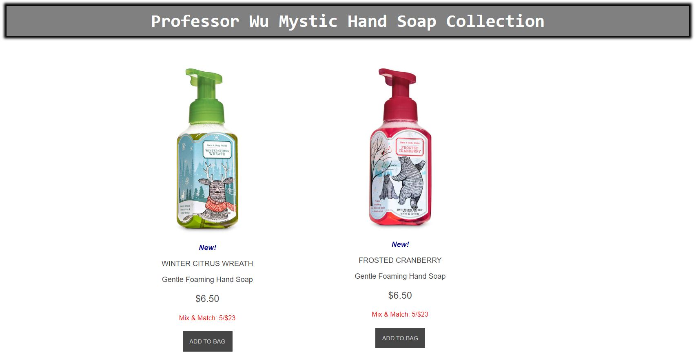
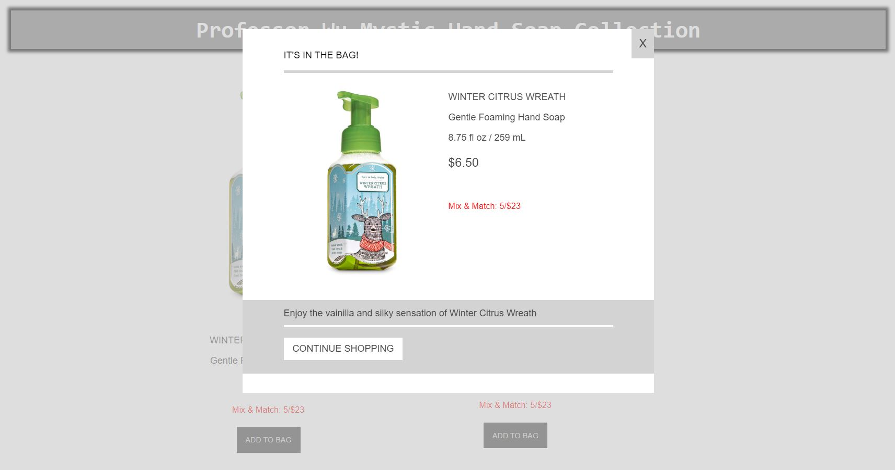

🔙CSS Modal Window
After completing Chapter 3: Creating Modal Window Using HTML and CSS (Page 88-97), create a webpage with two modal windows. For example, we can create a webpage to sale two hand soaps. The main page looks as the following:

When click on left item ADD TO BAG tab, the following modal window will appear:

When click on right item ADD TO BAG tab, the following modal window will appear:
Check template video below: